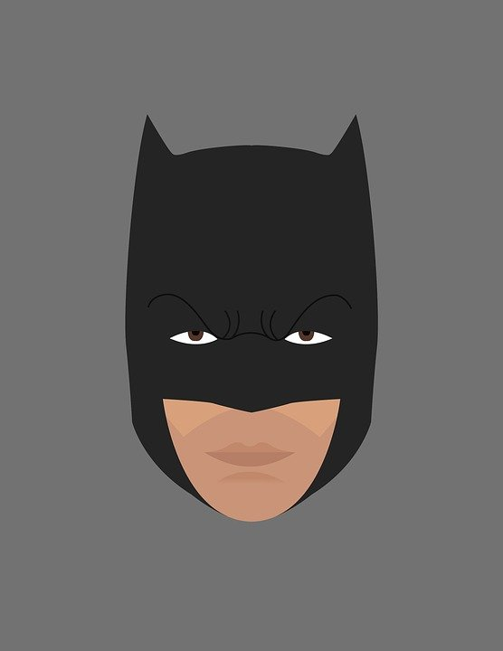

User Profile like Slack
PROFILE
Image with username, userhandle and buttons to change profile pic or edit profile Center alligned 
Some additional data, like say work place etc.
Firend List as Some Grid pattern, preferrably responsive like number of columns if change on width then better Must be scrollable like the feed.
Some additional informations